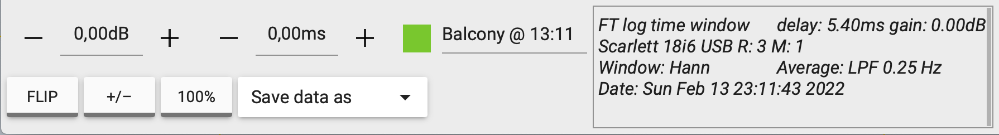
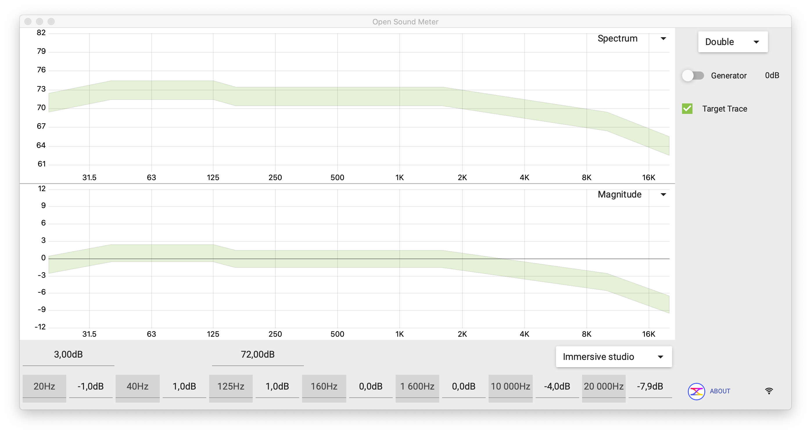

Quando você passa do "uma medição só" para "várias medições por culto" — porque está medindo 3 pontos diferentes do templo, ou comparando antes e depois de equalizar — o painel direito vira uma confusão. Groups e Stores são as ferramentas do OSM para organizar isso.
Os três tipos de Group
Quando você muda do modo Single para Double ou Three, o painel direito ganha três pastas pré-definidas, identificadas por cor:

Mics (microfones)
A pasta Mics agrupa microfones de medição ativos — medições que estão recebendo sinal em tempo real do canal M. Se você tem uma interface multicanal e ligou 3 mics em pontos diferentes da igreja, cada um vira uma entrada dentro de Mics.
O checkbox da pasta liga/desliga todos os mics de uma vez. Cada mic individual também tem seu próprio checkbox e cor. Use cores diferentes para identificar visualmente — por exemplo: amarelo para o mic na mesa, verde para o mic no fundo, vermelho para o mic embaixo do mezanino.
Math (medições calculadas)
A pasta Math guarda medições que não vêm direto de um microfone, mas são resultado de cálculo entre outras medições. O exemplo mais comum: a soma vetorial entre duas caixas, para você ver "como vai ficar" o som total quando elas tocarem juntas.
Páginas 8 do manual cobre como criar uma Math source (Vector Sum) em detalhe. Por enquanto, basta saber que essas medições aparecem aqui na pasta Math, com cor própria, e podem ser ligadas/desligadas como qualquer outra.
Stores (medições congeladas)
A pasta Stores guarda medições "fotografadas no tempo" — você congela a medição atual com o botão STORE da barra inferior, ela vira uma stored, e fica eternamente como está, mesmo que a medição ativa mude.
Use stores para:
- Antes/depois: meça a caixa principal, STORE, equalize, e compare a curva ativa com a stored.
- Pontos diferentes: meça na mesa, STORE; meça no fundo, STORE; meça no mezanino, STORE. Ative os 3 stores ao mesmo tempo para ver como o som muda pela igreja.
- Sessões anteriores: abra um arquivo de projeto e os stores vêm junto, com o nome e horário original.

FLIP inverte a fase da curva stored em 180° — útil quando você quer simular polaridade invertida para ver como ficaria a soma. +/- inverte polaridade. 100% volta o ganho aplicado ao original. Esses só aparecem em medições stored, nunca em medições ativas (porque ativa muda em tempo real).
O Target Trace
Acima das pastas, em modo Double e Three, aparece a entrada Target Trace com checkbox verde. Target Trace é uma curva-alvo de referência que você quer alcançar — por exemplo, a curva ideal de um sistema de PA para igreja, ou a curva "Immersive studio" para sala de gravação.

Você pode importar Target Traces de arquivos ou desenhar o seu próprio editando os pontos no rodapé. Para igreja, o target prático seria uma curva parecida com uma X-curve adaptada (ligeiramente decrescente nos agudos), mas isso vai depender de cada templo e gosto.
Salvar e abrir projeto
Toda a configuração — medições ativas, stored, groups, target trace, posição do gerador — é salvável como um projeto OSM:
- File → Save (atalho ⌘ S) salva o estado atual em .osm.
- File → Open (⌘ O) abre projeto salvo. Stores e Target Traces vêm junto.
- File → Recent projects mostra os últimos arquivos abertos.
Crie um arquivo igreja-NOME-2026-03.osm para cada visita. Antes de qualquer ajuste, faça uma medição limpa em 2-3 pontos e dê STORE com nome descritivo ("Antes - mesa", "Antes - fundo"). Faça os ajustes, mede de novo, STORE com "Depois - mesa", "Depois - fundo". No fim do culto seguinte, abre o arquivo: você vê o antes e o depois, sem ter de adivinhar pela memória.
O essencial pra reter desta página
- Mics, Math e Stores são as 3 pastas que aparecem em modo Double e Three.
- Mics = medições ao vivo dos microfones. Math = cálculos (Vector Sum). Stores = curvas congeladas para comparação.
- O botão STORE da barra inferior congela a medição atual e a coloca na pasta Stores.
- Target Trace é a curva-alvo verde que você sobrepõe na medição para ver "estou perto do ideal?".
- File → Save guarda tudo num projeto .osm. Crie um arquivo por visita técnica.